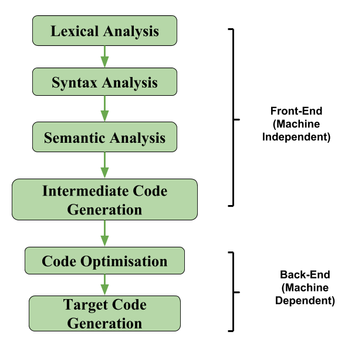

In the analysis-synthesis model of a compiler, the front end of a compiler translates a source program into an independent intermediate code, then the back end of the compiler uses this intermediate code to generate the target code (which can be understood by the machine).
The benefits of using machine independent intermediate code are:
- Because of the machine independent intermediate code, portability will be enhanced.For ex, suppose, if a compiler translates the source language to its target machine language without having the option for generating intermediate code, then for each new machine, a full native compiler is required. Because, obviously, there were some modifications in the compiler itself according to the machine specifications.
- Retargeting is facilitated
- It is easier to apply source code modification to improve the performance of source code by optimising the intermediate code.

If we generate machine code directly from source code then for n target machine we will have n optimisers and n code generators but if we will have a machine independent intermediate code,
we will have only one optimiser. Intermediate code can be either language specific (e.g., Bytecode for Java) or language. independent (three-address code).
The following are commonly used intermediate code representation:
- Postfix Notation –
The ordinary (infix) way of writing the sum of a and b is with operator in the middle : a + b
The postfix notation for the same expression places the operator at the right end as ab +. In general, if e1 and e2 are any postfix expressions, and + is any binary operator, the result of applying + to the values denoted by e1 and e2 is postfix notation by e1e2 +. No parentheses are needed in postfix notation because the position and arity (number of arguments) of the operators permit only one way to decode a postfix expression. In postfix notation the operator follows the operand.Example – The postfix representation of the expression (a – b) * (c + d) + (a – b) is : ab – cd + ab -+*.
Read more: Infix to Postfix - Three-Address Code –
A statement involving no more than three references(two for operands and one for result) is known as three address statement. A sequence of three address statements is known as three address code. Three address statement is of the form x = y op z , here x, y, z will have address (memory location). Sometimes a statement might contain less than three references but it is still called three address statement.Example – The three address code for the expression a + b * c + d :
T 1 = b * c
T 2 = a + T 1
T 3 = T 2 + dT 1 , T 2 , T 3 are temporary variables.
- Syntax Tree –
Syntax tree is nothing more than condensed form of a parse tree. The operator and keyword nodes of the parse tree are moved to their parents and a chain of single productions is replaced by single link in syntax tree the internal nodes are operators and child nodes are operands. To form syntax tree put parentheses in the expression, this way it's easy to recognize which operand should come first.Example –
x = (a + b * c) / (a – b * c)